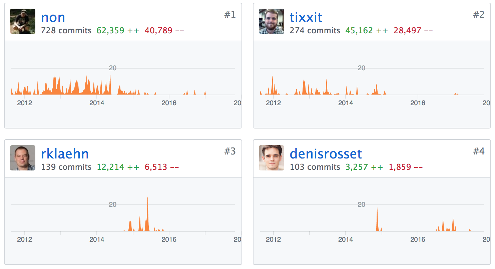

Arman Bilge
@armanbilge
arman@overlake.io

List<T> over ArrayList<T>, etc.int or long; float, double, or BigDecimal?trait Multiplicable[T] {
def *(a: T): T
}
class MyInt(val i: Int) extends Multiplicable[MyInt] { ... }
class MyLong(val i: Long) extends Multiplicable[MyLong] { ... }
def square[T <: Multiplicable[T]](x: T): T = x * x
square(new MyInt(2))trait IsMultiplicable[T] {
def times(a: T, b: T): T
}
object IntIsMultiplicable extends IsMultiplicable[Int] {
def times(a: Int, b: Int) = a * b
}
object LongIsMultiplicable extends IsMultiplicable[Long] { ... }
def square[T](x: T, impl: IsMultiplicable[T]): T =
impl.times(x, x)
square(2, IntIsMultiplicable)implicit def intWrapper(x: Int) = new RichInt(x)
class RichInt(val self: Int) {
def until(end: Int): Range = Range(self, end)
}
for (i <- 0 until 10) println(i)class Config(option: Boolean)
def f(x: String)(implicit cfg: Config) = { ... }
implicit config = new Config(false)
f("hello world")trait IsMultiplicable[T] {
def times(a: T, b: T): T
}
implicit object IntIsMultiplicable extends IsMultiplicable[Int] {
def times(a: Int, b: Int) = a * b
}
def square[T](x: T)(implicit impl: IsMultiplicable[T]): T =
impl.times(x, x)
square(2)int vs Integer; more transparent in Scala (Int)trait IsMultiplicable[T] {
def times(a: T, b: T): T
}
implicit object IntIsMultiplicable extends IsMultiplicable[Int] {
def times(a: Int, b: Int) = a * b
}
def square[T](x: T)(implicit impl: IsMultiplicable[T]): T =
impl.times(x, x)
square(2)public final class Main$
{
public Object square(Object x, Main.IsMultiplicable impl)
{
return impl.times(x, x);
}
private Main$()
{
MODULE$ = this;
square(BoxesRunTime.boxToInteger(2), Main.IntIsMultiplicable..MODULE$);
}
public static Main$ MODULE$;
static
{
new Main$();
}
}public static class Main$IntIsMultiplicable$
implements Main.IsMultiplicable
{
public int times(int a, int b)
{
return a * b;
}
public volatile Object times(Object a, Object b)
{
return BoxesRunTime.boxToInteger(times(BoxesRunTime.unboxToInt(a), BoxesRunTime.unboxToInt(b)));
}
}trait IsMultiplicable[@specialized T] {
def times(a: T, b: T): T
}
implicit object IntIsMultiplicable extends IsMultiplicable[Int] {
def times(a: Int, b: Int) = a * b
}
def square[@specialized T](x: T)(implicit impl: IsMultiplicable[T]): T =
impl.times(x, x)
square(2)public final class Main$
{
public int square$mIc$sp(int x, Main.IsMultiplicable impl)
{
return impl.times$mcI$sp(x, x);
}
private Main$()
{
MODULE$ = this;
square$mIc$sp(2, Main.IntIsMultiplicable..MODULE$);
}
public static Main$ MODULE$;
static
{
new Main$();
}
}public static class Main$IntIsMultiplicable$
implements sp
{
public int times(int a, int b)
{
return times$mcI$sp(a, b);
}
public int times$mcI$sp(int a, int b)
{
return a * b;
}
}def uglySquare[@specialized T](x: T)(implicit impl: IsMultiplicable[T]): T =
impl.times(x, x)
class MultiplyOps[@specialized T](self: T)(implicit impl: IsMultiplicable[T]) {
def * (other: T): T = impl.times(self, other)
}
implicit def toMultiplyOps[@specialized T: IsMultiplicable](t: T): MultiplyOps[T] =
new MultiplyOps(t)
def square[@specialized T: IsMultiplicable](x: T) = x * xpublic final class Main$
{
public int square$mIc$sp(int x, Main.IsMultiplicable evidence$2)
{
return toMultiplyOps$mIc$sp(x, evidence$2).$times$mcI$sp(x);
}
}Numeric[T] typeclass)@inline-ingcfor macrocfor(0)(_ < 10, _ + 1) { i =>
println(i)
} def cforMacro[A](c: Context)(init: c.Expr[A])
(test: c.Expr[A => Boolean], next: c.Expr[A => A])
(body: c.Expr[A => Unit]): c.Expr[Unit] = {
import c.universe._
val util = SyntaxUtil[c.type](c)
val index = util.name("index")
val tree = if (util.isClean(test, next, body)) {
q"""
var $index = $init
while ($test($index)) {
$body($index)
$index = $next($index)
}
"""
} else {
...
}
new InlineUtil[c.type](c).inlineAndReset[Unit](tree)
}
implicit def matrixIsRing[N <: Int with Singleton : Witness.Aux, R : Field]: Ring[Matrix[N, R]] = new Ring[Matrix[N, R]] {
override def negate(x: Matrix[N, R]): Matrix[N, R] =
Matrix((i, j) => -x(i, j))
override def zero: Matrix[N, R] =
Matrix((i, j) => Field[R].zero)
override def plus(x: Matrix[N, R], y: Matrix[N, R]): Matrix[N, R] =
Matrix((i, j) => x(i, j) + y(i, j))
override def minus(x: Matrix[N, R], y: Matrix[N, R]): Matrix[N, R] =
Matrix((i, j) => x(i, j) - y(i, j))
override def one: Matrix[N, R] =
Matrix((i, j) => if (i == j) Field[R].one else Field[R].zero)
override def times(x: Matrix[N, R], y: Matrix[N, R]): Matrix[N, R] =
Matrix((i, j) => x.rows(i) dot y.columns(j))
}
implicit def matrixIsVectorSpace[N <: Int with Singleton : Witness.Aux, R](implicit f: Field[R]): VectorSpace[Matrix[N, R], R] = new VectorSpace[Matrix[N, R], R] {
override def scalar: Field[R] = f
override def timesl(r: R, v: Matrix[N, R]): Matrix[N, R] =
Matrix[N, R]((i: Int, j: Int) => r * v(i, j))
override def divr(v: Matrix[N, R], r: R): Matrix[N, R] =
Matrix[N, R]((i: Int, j: Int) => v(i, j) / r)
override def negate(x: Matrix[N, R]): Matrix[N, R] =
Ring[Matrix[N, R]].negate(x)
override def zero: Matrix[N, R] =
Ring[Matrix[N, R]].zero
override def plus(x: Matrix[N, R], y: Matrix[N, R]): Matrix[N, R] =
Ring[Matrix[N, R]].plus(x, y)
override def minus(x: Matrix[N, R], y: Matrix[N, R]): Matrix[N, R] =
Ring[Matrix[N, R]].minus(x, y)
}
Jetimport spire.implicits._
import spire.algebra.Ring
import spire.math.{Jet, JetDim}
implicit val jd = JetDim(1)
def square[T : Ring](x: T) = x * x
square(Jet(2.0, 0)) // (4.0 + [4.0]h)